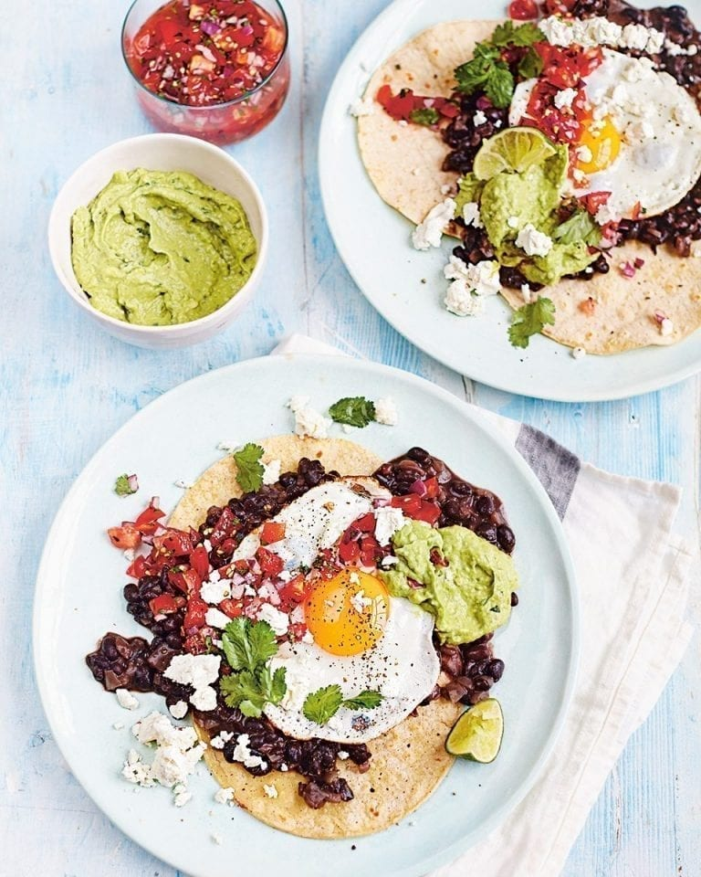

Huevos Rancheros- A Whole Damn Meal
If you need a little bit of every taste for breakfast- spicy, acidic, salty, fatty, carb-y- then huevos rancheros are the breakfast for you.

Tools
Ingredients
- 2 eggs
- 15.5oz can black beans
- 1/2 cup salsa (can use tomato salsa or salsa verde)
- 2 small corn tortillas
- ~2 oz of cotija cheese or queso fresco, crumbled
- 1/2 tbsp olive oil
- 2 tsp cumin
- salt and pepper to taste
- hot sauce to taste
Optional Toppings:
- small white or red onion, diced
- chopped cilantro
- fresh jalapeno, diced
- avocado slices
- lime wedge
Directions
- Add olive oil and cumin to skillet, saute on low heat for 1 min
- Add salsa, increase heat and cook until salsa starts to thicken
- Add beans and a little bit of water, salt, and pepper cook until thoroughly warmed
- Heat tortillas- in the microwave under wet paper towel for 15s on high, or on another skillet on low heat ~3min per side
- Fry 2 eggs sunny side up (about 5 min)
- Have all garnishes at the ready
- Spoon salsa mixture onto tortillas. Slide eggs from pan onto salsa as soon as the eggs are done
- Add garnishes, possibly more salt and pepper, eat immediately (will be messy but very worth it)
makes 1 serving